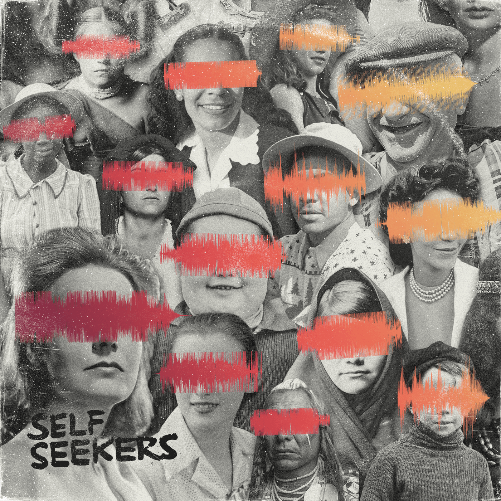
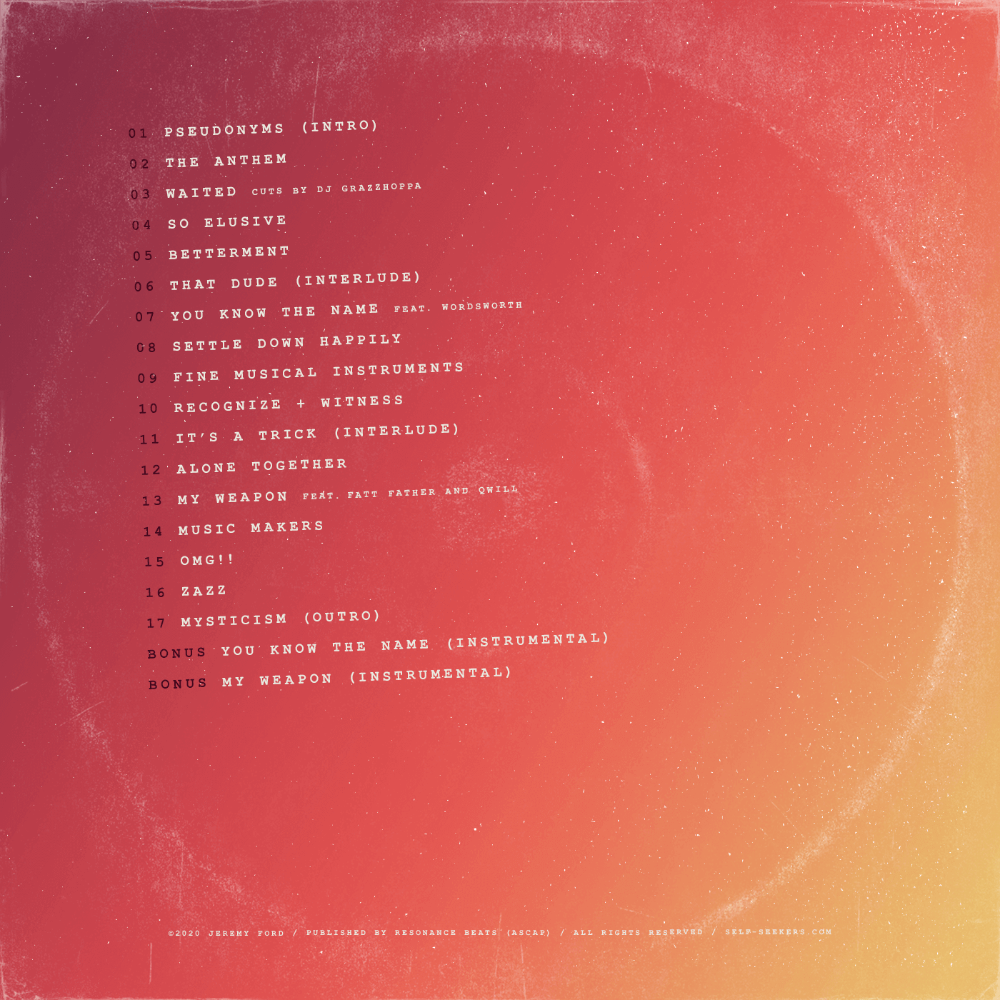
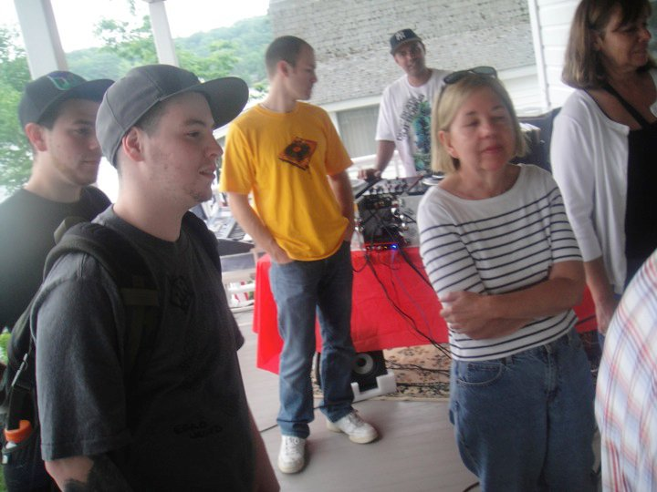
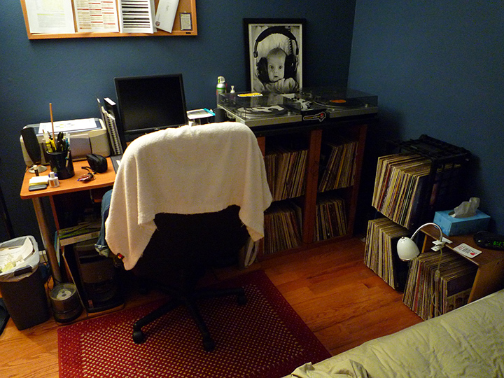
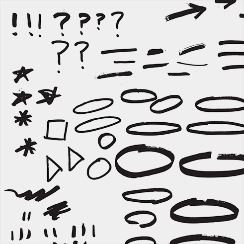
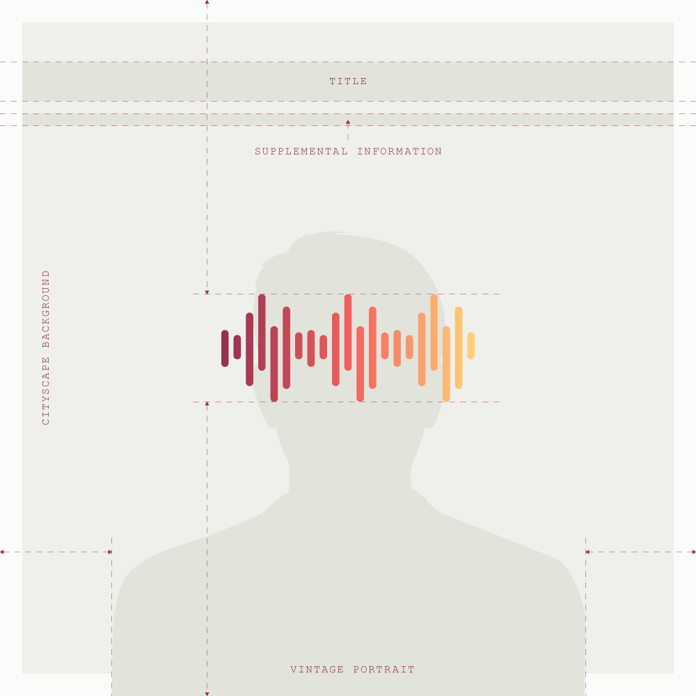
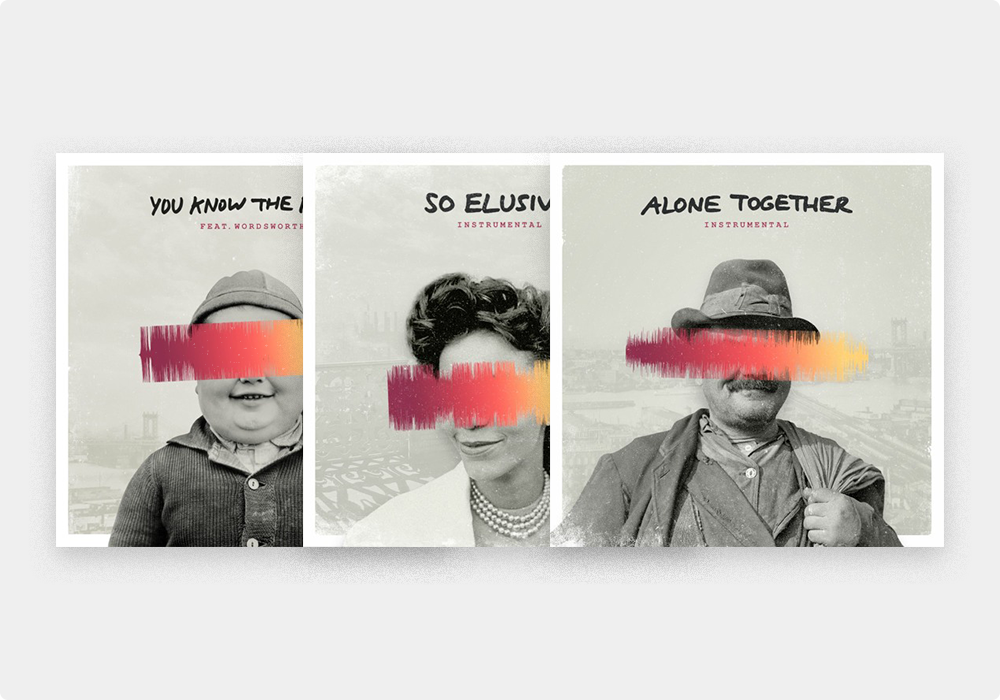
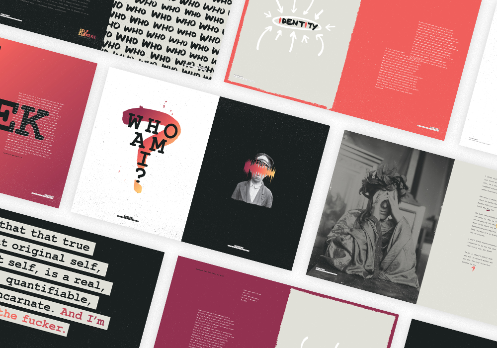
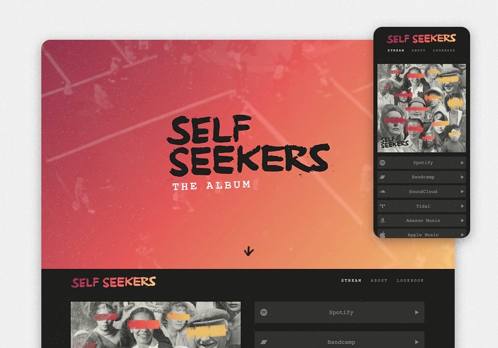

Branding Graphic design Music production Personal
Self Seekers: a conceptual hip hop album years in the making
Self Seekers is a multifacted entertainment experience that marries music and design to address themes of identity, self-discovery, and anonymidity. The project included music composition and production, brand identity, responsive web design, graphic design, and marketing.


Hooked
While my musical preferences run the gamut, there's a special place in my heart for late 1990s/early 2000s boom bap hip hop. Ever since I first heard loops and chops from sample-based producers like Alchemist, Pete Rock, DJ Premier, and Madlib, I was hooked. While I appreciated lyricism and what it brought to the composition of a song, there was just something about the beat in the background. In fact, I often found myself fast forwarding a track to hear the instrumental outro before the song faded out. In 2005, that love for hip hop instrumentals transformed into a hobby when I made my first beat using Fruity Loops, a PC-only Digital Audio Workstation. And while I've made hundreds of beats since then, it wasn't until a few years ago that I decided to create an album. It was exciting to consider what the project would entail: everything from music production and mixing, to writing, branding, digital design, cover artwork, marketing, and PR.


Concept and music
In favor of focusing on the music and design aspects of the project, I won't go into too much detail about the album's concept here. The TL;DR version of a detailed manifesto I wrote on the topic is that self-discovery, personal identity, and anonymidity are themes that have been top of mind for most of my adult life. Therefore, it only felt right for the album to reflect those thoughts.
The music is mostly instrumental (17 of 19 songs) since instrumentals can be produced autonomously and are therefore quicker to complete. Rooted in the traditional boom bap hip hop production style, the core melody of each song is driven by a manipulated sample taken from a vinyl record. To incorporate the theme of identity into the music, I sprinkled vocal samples from TV shows, movies, and interviews throughout the listening experience. Entities like Alan Watts, Mr. Rogers, Bruce Lee, Steven Wright, and Shrek, among many others, can be heard spouting their struggles with self-discovery.
Establishing a design system
Color
To balance the potentially bleak nature of the album's theme, I opted for a warm, bright color palette. To further drive home the theme, I chose to incorporate hand-written type and illustrative elements, since an individual's handwriting is so closely tied to their unique identity. To reiterate the fact that self-discovery has long been a relevant topic, I used a distressed texture over all visual assets as a symbol of time and history.
Photography
While researching photographical styles and subject matter, I became entranced by the mystique of vintage portraits. Like many others, I thoroughly enjoy immersing myself in a snapshot of the past. It allows me to escape the present and imagine how different things were at the time the image was taken. And yet, despite all the differences between then and now, the struggle for self-discovery has not changed — it's a topic that transcends time, and always will. For these reasons, the historical portraits felt right. I rummaged through hundreds of royalty-free vintage stock photos, which yielded several incredible images I manipulated for the project.
User interviewing and templatization
Leading up to the final release date, I decided to publish three of the album's tracks as singles to drum up awareness. I sent several of my favorite songs to a group of trusted friends (with varied musical tastes) and asked which ones they liked best. The patterns in their responses were immediately clear, which helped inform my decisions. In a way, crowdsourcing guaranteed more success for the singles because the end consumers were choosing what they wanted to hear, eliminating any guesswork or assumptions. After designing the first single's artwork, I used it as a template to keep the artwork consistent across all three. The template consisted of a vintage New York cityscape, a vintage portrait, a sonic waveform obscuring the subject's identity, and a handwritten song title at the top.



Visuals
Lookbook
Early in the process, it became obvious that music alone wasn't enough to express my feelings on the topic of identity. So I decided to add a visual component to the project — a digital lookbook that could be viewed or downloaded from Bandcamp's Merch page (I originally wanted to hand out printed copies at a launch party, but the COVID-19 pandemic canceled live events). The lookbook would feature lyrics from the album, alongside expressive typography and imagery to support the project's theme and tie everything together.
Web experience
I loved the simplicity of link consolidators like Amplify, Linktree, and Linkfire, but I needed a platform with the flexibility to add custom content, like an about section and the lookbook. I wasn't able to find a tool that accommodated my needs, so I designed and built a custom, responsive site using basic HTML, CSS, and JS. The viewer is greeted by the project's title sitting confidently over a vintage video loop of city dwellers walking around aimlessly in search of something, presumaby themselves. This section would be hidden on mobile to enable quick access to the streaming section. The album's cover art is prominently featured alongside links to listen via any streaming platform. I incorporated distressed textures and torn paper from the lookbook and overrode the browser's default cursors in favor of custom, hand-drawn ones that would emulate the lookbook's aesthetic.


Motion and video
To convey anxiety, transformation, and restlessness, three elements associated with the process of self-discovery, I established an animated type treatment that consisted of wiggly hand-drawn letterforms. Since motion design is not my area of expertise, I kept things simple by creating three unique frames of type and rotating through all three with a quick loop. This would call attention to the inconsistencies between the three frames and create the jerky movement. I used this treatment for animated titles within the artwork of the album's singles, which I posted on Instagram to announce their releases.
🔊 The embedded Instagram posts below contain sound 🔊